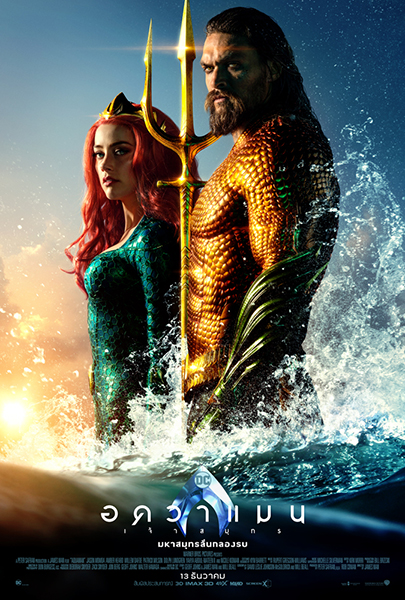

รีวิว Aquaman เจ้าสมุทร
เข้าฉายในบ้านเราไปเป็นที่เรียบร้อยร้อยแล้ว สำหรับ Aquaman หรือที่ใช้ชื่อไทยว่า เจ้าสมุทร ภาพยนตร์ซูเปอร์ฮีโร่เรื่องล่าสุดของจักรวาล DC ที่แฟนหนังหลายคนอาจจะรู้จักเขาพอสมควรจาก Justice League (2017) ภาพยนตร์รวมดาวซูเปอร์ฮีโร่ของฝั่งนี้ ซึ่งเข้าฉายไปในปีที่แล้วและทำออกมาไม่ได้ค่อยถูกใจแฟนหนังเท่าที่ควร ต้องมาดูกันว่าการสร้างเรื่องราวของเจ้าสมุทรจากฝีมือผู้กำกับมากความสามารถ เจมส์ วาน (James Wan) จะสามารถกอบกู้ศักดิ์ศรีและความนิยมจากแฟนๆ คืนมาหรือไม่
Aquaman เจ้าสมุทร ว่าด้วยเรื่องราวต้นกำเนิดของ อาเธอร์ เคอร์รี ครึ่งมนุษย์และครึ่งแอตแลนเทียน ที่จะต้องพบกับการผจญภัยในชีวิตของเขา ซึ่งไม่ได้แค่ทำให้เขาได้รู้ถึงตัวตนที่แท้จริงของตัวเองเท่านั้น แต่ยังได้พบอีกว่าเขามีเกียรติมากพอที่ได้เกิดมาเป็นกษัตริย์แห่งอาณาจักรใต้น้ำแอตแลนติส และกลายเป็นซูเปอร์ฮีโร่ของโลกใบนี้
เรียกได้ว่าก่อนจะเข้าไปดู Aquaman นั้นก็สร้างความตื่นเต้นระทึกใจได้ไม่น้อยเลย หนึ่งล่ะที่ปฏิเสธไม่ได้เลยว่าค่อนข้างเอาใจช่วยภาพยนตร์เรื่องนี้ และคาดหวังว่าจะทำออกมาให้ดีสมกับที่รอคอย ประกอบกับการชิมลางกำกับภาพยนตร์ซูเปอร์ฮีโร่เรื่องแรกของ เจมส์ วาน (James Wan) ที่ขึ้นชื่อว่าเป็นผู้กำกับที่มีฝีมือในยุคนี้ และในที่สุดเมื่อได้ดูหนังจนจบแล้วก็พบว่าแทบไม่ทำให้ผิดหวังเลย
มาเริ่มกันตั้งแต่พล็อตเรื่องที่เชื่อว่าหลายคนน่าจะเดากันได้ว่าเรื่องราวจะจบลงอย่างไร ซึ่งมันก็ไม่ได้ทำให้หนังสนุกน้อยลง เพราะระหว่างทางกว่าจะไปถึงตอนจบนั้นหนังสร้างบันเทิงได้ดีสุดๆ เรียกว่ามันส์ระเบิด สนุกแบบที่ไม่ต้องคิดอะไรมากเลย ทั้งในส่วนของการช่วยเหลือเพื่อนมนุษย์ของ อาเธอร์ เคอร์รี รับบทโดย เจสัน โมโมอา (Jason Momoa) ที่ดูเหมือนว่าพละกำลังของเขานั้นมีความพิเศษที่ไม่เหมือนใครและด้วยคาแรคเตอร์ของเขาที่ออกจะง่ายๆ สบายๆ ติดจะขี้เล่นก็สามารถเข้าถึงแฟนๆ ส่วนใหญ่ได้มาก
รวมไปถึงการผจญภัยเพื่อพิสูจน์ตัวเองที่แม้ว่าท้ายที่สุดแล้วเราจะได้ค่อยได้เห็นพัฒนาการในเรื่องของความคิดของเขาที่ชัดเจน แต่ภาพรวมของหนังที่ละลานตาไปด้วยสัตว์ใต้ท้องทะลที่มีความแปลกแหวกแนวไปจากเรื่องอื่นและความยิ่งใหญ่อลังการของอาณาจักรใต้น้ำ ทำให้เราพอจะลืมความสามัญธรรมดาของ อาเธอร์ เคอร์รี ไปได้มาก และปฏิเสธไม่ได้ว่าตัวละคร เมรา ที่รับบทโดย แอมเบอร์ เฮิร์ด (Amber Heard) นั้นนับเป็นตัวช่วยชูโรงให้หนังน่าดูมากขึ้นไปอีก ฝ่ายตัวละคร ราชินีแอตแลนนา ของ นิโคล คิดแมน (Nicole Kidman) ก็ถือว่าสร้างความเซอร์ไพรส์ได้ไม่น้อยเลย
เห็นข้อดีของหนังมามากก็ใช่ว่าจะไม่มีที่ติ โดยเฉพาะเรื่องของงาน CGI ที่ในบางจุดยังคงไม่สมบูรณ์ดี บทพูดของทุกตัวละครที่ออกจะโบราณน้ำเน่า รวมไปถึงเรื่องการผูกปมของตัวละครที่ดูง่ายดายเกินไปเหมือนอย่างที่บอกในข้างต้นว่าดูแล้วก็ไม่ต้องคิดอะไรมาก และเราก็จะพบว่าเส้นเรื่องของ Aquaman นั้นคือหนังสำหรับครอบครัวชัดๆ ติดแค่ว่า อาเธอร์ เคอร์รี นั้นอาจจะมีครอบครัวที่ใหญ่ไปสักหน่อยเท่านั้นเอง
Aquaman เจ้าสมุทร 8.5/10 คะแนน เข้าฉายแล้ววันนี้ในโรงภาพยนตร์